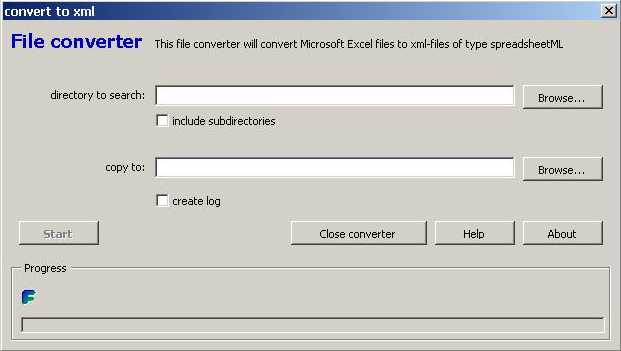

|
XMLConverter - help
The file converter will convert Microsoft Excel files to xml-files of type
spreadsheetML. It can copy the original directory-structure to the new
location of the converted files.

- Macro Security must be set to medium or low. (>Tools >Macro >Security).
- Upon opening converter.xla press Enable Macro's.
directory to search
Specify the directory to search. Use the Browse... button to locate the directory.
The file search will include all files with the extension .xls, .xlt, .xla regardless
of the type of the file. Mind that xml spreadsheets with the extension .xml are not
included, whereas xml spreadsheets with the extension .xls are included in the search.
include subdirectories
Check if you want to include subdirectories in the search.
copy to
Specify where to save the converted files. Use the Browse... button to locate
the directory. The converted files will be saved as xml-spreadsheets with the extension
.xml. If you checked the include subdirectories checkbox the converted
files will be saved in a similar directory-structure as the original files.
create log
Check if you want a workbook report on the conversion. Will include
old path, old name, new path, new name and error messages.
Start
Start the conversion. The interface will react irresponsive while Excel
creates a list of files to convert. This action may take a while, especially if
large directory-structures are being searched. Before the conversion process
begins you wil get a chance to cancel the process. After that the conversion process
can only be interrupted by pressing Control + Break. Use this drastic measure
only in case of emergency.
The conversion process will halt upon opening password protected workbooks and workbooks with
linked data. The usual message will be displayed. During tests only workbooks containing
weird VBA-code that was set to execute upon opening deteriorated the process.
MARK THAT VBA-CODE THAT EXECUTES UPON OPENING OF A WORKBOOK THAT IS TO BE
CONVERTED CAN HARM YOUR COMPUTER AND/OR FILES!
|